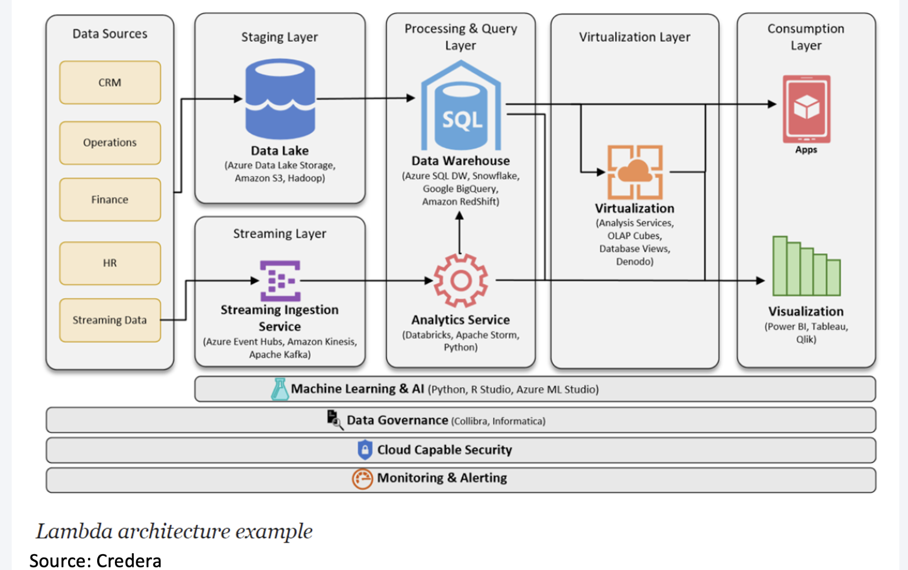
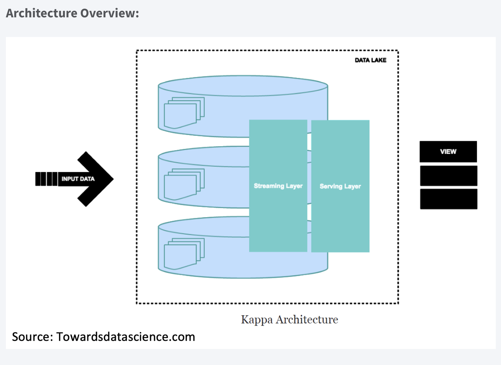
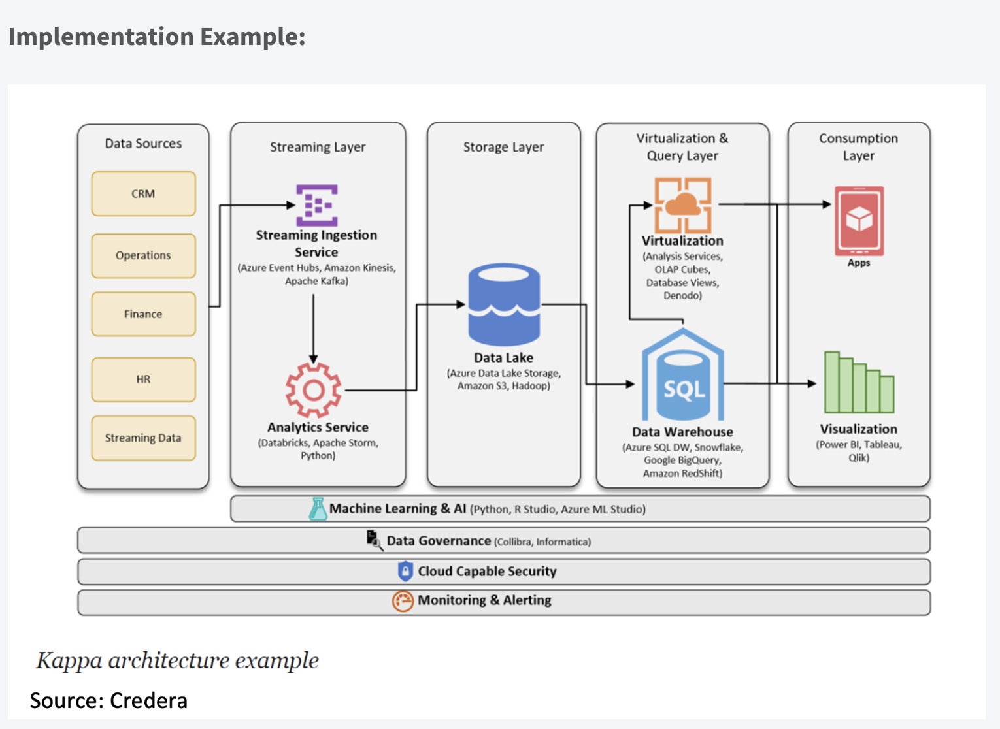

Architektury strumieniowania danych
Architektura przesyłania strumieniowego to określony zestaw technologii, które współpracują ze sobą w celu obsługi przetwarzania strumieniowego, co jest praktyką podejmowania działań na serii danych w momencie ich tworzenia. W wielu nowoczesnych wdrożeniach Apache Kafka działa jako magazyn danych przesyłanych strumieniowo, a następnie wiele procesorów strumieniowych może działać na danych przechowywanych w Kafce w celu wygenerowania wielu danych wyjściowych. Niektóre architektury przesyłania strumieniowego obejmują przepływy pracy zarówno do przetwarzania strumieniowego, jak i przetwarzania wsadowego, które obejmują inne technologie do obsługi przetwarzania wsadowego na dużą skalę lub wykorzystują Kafkę jako magazyn centralny, jak określono w architekturze Kappa.
Doskonała architektura przetwarzania danych w czasie rzeczywistym musi być odporna na błędy i skalowalna; musi obsługiwać aktualizacje wsadowe i przyrostowe oraz być rozszerzalna.
Na początku badamy dwie podstawowe architektury przetwarzania danych, Lambda i Kappa, które stanowią podstawę różnych aplikacji korporacyjnych.
Architektura lambda
Architektura Lambda obejmuje warstwę wsadową (batch layer), warstwę strumieniowa (stream layer) i warstwę serwowania.
Warstwa wsadowa działa na pełnych danych, dzięki czemu system może generować najdokładniejsze wyniki. Jednak wyniki są okupione dużymi opóźnieniami wynikającymi z długiego czasu obliczeń. Warstwa wsadowa przechowuje surowe dane w miarę ich nadejścia i oblicza widoki wsadowe do wykorzystania. Naturalnie procesy wsadowe będą występować w pewnych odstępach czasu i będą długotrwałe. Zakres danych wynosi od godzin do kilku lat.
Warstwa strumieniowa:
- generuje wyniki z małymi opóźnieniami i w czasie zbliżonym do rzeczywistego.
- oblicza widoki w czasie rzeczywistym w celu uzupełnienia widoków wsadowych.
- odbiera napływające dane i aktualizuje wyniki warstwy wsadowej. Koszt obliczeń jest znacznie obniżony dzięki algorytmom przyrostowym zaimplementowanym w warstwie szybkości.
Widoki wsadowe mogą być przetwarzane przy użyciu bardziej złożonych lub kosztownych reguł i mogą mieć lepszą jakość danych i mniej przekrzywień, podczas gdy widoki w czasie rzeczywistym zapewniają bieżący dostęp do najnowszych możliwych danych.
Wreszcie warstwa serwująca umożliwia różne zapytania o wyniki przesłane z warstw wsadowych i szybkich. Dane wyjściowe z warstwy wsadowej w postaci widoków wsadowych i warstwy szybkości w postaci opinii w czasie zbliżonym do rzeczywistego są przekazywane do warstwy obsługującej, która wykorzystuje te dane do obsługi oczekujących zapytań na zasadzie ad-hoc.
Implementacja:

Dobre bo:
- Dobra równowaga między szybkością, niezawodnością i skalowalnością.
- Dostęp do wyników zarówno w czasie rzeczywistym, jak i offline, bardzo dobrze pokrywa wiele scenariuszy analizy danych.
- Dostęp do pełnego zestawu danych w oknie wsadowym może przynieść określone optymalizacje, które sprawią, że Lambda będzie wydajniejsza i jeszcze prostsza do wdrożenia.
Kiepskie gdy:
- Wewnętrzna logika przetwarzania jest taka sama (warstwy wsadowe i warstwy czasu rzeczywistego) - wiele zduplikowanych modułów i kodowania.
- Zbiór danych modelowany za pomocą architektury Lambda jest trudny do migracji i reorganizacji.
Architektura kappa
Architektura Kappa to architektura oprogramowania używana do przetwarzania danych przesyłanych strumieniowo. Głównym założeniem Architektury Kappa jest możliwość wykonywania przetwarzania w czasie rzeczywistym i przetwarzania wsadowego, zwłaszcza w celach analitycznych, za pomocą jednego stosu technologicznego. Opiera się na architekturze przesyłania strumieniowego, w której przychodzące serie danych są najpierw przechowywane w silniku przesyłania wiadomości, takim jak Apache Kafka. Stamtąd silnik przetwarzania strumienia odczyta dane, przekształci je w format nadający się do analizy, a następnie zapisze je w analitycznej bazie danych, aby użytkownicy końcowi mogli wyszukiwać.
Architektura Kappa obsługuje analizy (prawie) w czasie rzeczywistym, gdy dane są odczytywane i przekształcane natychmiast po umieszczeniu ich w silniku przesyłania komunikatów. Dzięki temu najnowsze dane są szybko dostępne dla zapytań użytkowników końcowych. Obsługuje również analizę historyczną, odczytując zapisane dane przesyłane strumieniowo z mechanizmu przesyłania wiadomości później w sposób wsadowy, aby utworzyć dodatkowe możliwe do analizy dane wyjściowe dla większej liczby typów analiz.
Architektura Kappa jest prostszą alternatywą dla architektury Lambda, ponieważ wykorzystuje ten sam stos technologii do obsługi strumienia w czasie rzeczywistym i historycznego przetwarzania wsadowego. Obie architektury obejmują przechowywanie danych historycznych w celu umożliwienia analiz na dużą skalę. Obie architektury są również pomocne w rozwiązywaniu problemów związanych z „tolerancją błędów ludzkich”, w których problemy z kodem przetwarzania (błędy lub znane ograniczenia) można przezwyciężyć, aktualizując kod i ponownie uruchamiając go na danych historycznych. Główna różnica w stosunku do architektury Kappa polega na tym, że wszystkie dane są traktowane jako strumień, więc silnik przetwarzania strumienia działa jako jedyny silnik transformacji danych.

Implementation Example:

Plusy
- Aplikacje mogą odczytywać i zapisywać bezpośrednio do Kafki zgodnie z rozwojem. W przypadku istniejących źródeł zdarzeń detektory są teraz przyzwyczajone do przesyłania strumieniowego raportów z dzienników bazy danych, co eliminuje konieczność przetwarzania wsadowego podczas ruchu przychodzącego, co skutkuje mniejszą liczbą zasobów.
- Zapytania muszą uwzględniać tylko jedną lokalizację serwowania, zamiast sprawdzać widoki partii i szybkości.
Trudności
- niełatwe do wdrożenia, zwłaszcza w przypadku odtwarzania danych.